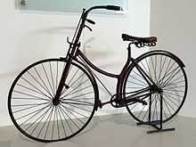
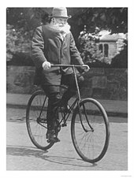

The first mechanically-propelled, two-wheeled vehicle may have been built by Kirkpatrick MacMillan, a Scottish blacksmith, in 1839, although the claim is often disputed. He is also associated with the first recorded instance of a cycling traffic offense, when a Glasgow newspaper in 1842 reported an accident in which an anonymous "gentleman from Dumfries-shire... bestride a velocipede... of ingenious design" knocked over a little girl in Glasgow and was fined five shillings.
In the early 1860s, Frenchmen Pierre Michaux and Pierre Lallement took bicycle design in a new direction by adding a mechanical crank drive with pedals on an enlarged front wheel (the velocipede). This was the first in mass production. Another French inventor named Douglas Grasso had a failed prototype of Pierre Lallement's bicycle several years earlier. Several inventions followed using rear-wheel drive, the best known being the rod-driven velocipede by Scotsman Thomas McCall in 1869. In that same year, bicycle wheels with wire spokes were patented by Eugène Meyer of Paris. The French vélocipède, made of iron and wood, developed into the "penny-farthing" (historically known as an "ordinary bicycle", a retronym, since there was then no other kind).It featured a tubular steel frame on which were mounted wire-spoked wheels with solid rubber tires. These bicycles were difficult to ride due to their high seat and poor weight distribution. In 1868 Rowley Turner, a sales agent of the Coventry Sewing Machine Company (which soon became the Coventry Machinists Company), brought a Michaux cycle to Coventry, England. His uncle, Josiah Turner, and business partner James Starley, used this as a basis for the 'Coventry Model' in what became Britain's first cycle factory.
The dwarf ordinary addressed some of these faults by reducing the front wheel diameter and setting the seat further back. This, in turn, required gearing—effected in a variety of ways—to efficiently use pedal power. Having to both pedal and steer via the front wheel remained a problem. Englishman J.K. Starley (nephew of James Starley), J.H. Lawson, and Shergold solved this problem by introducing the chain drive (originated by the unsuccessful "bicyclette" of Englishman Henry Lawson), connecting the frame-mounted cranks to the rear wheel. These models were known as safety bicycles, dwarf safeties, or upright bicycles for their lower seat height and better weight distribution, although without pneumatic tires the ride of the smaller-wheeled bicycle would be much rougher than that of the larger-wheeled variety. Starley's 1885 Rover, manufactured in Coventry is usually described as the first recognizably modern bicycle. Soon the seat tube was added, creating the modern bike's double-triangle diamond frame.
Further innovations increased comfort and ushered in a second bicycle craze, the 1890s Golden Age of Bicycles. In 1888, Scotsman John Boyd Dunlop introduced the first practical pneumatic tire, which soon became universal. Willie Hume demonstrated the supremacy of Dunlop's tyres in 1889, winning the tyre's first-ever races in Ireland and then England. Soon after, the rear freewheel was developed, enabling the rider to coast. This refinement led to the 1890s invention of coaster brakes. Dérailleur gears and hand-operated Bowden cable-pull brakes were also developed during these years, but were only slowly adopted by casual riders.
Bicycles and horse buggies were the two mainstays of private transportation just prior to the automobile, and the grading of smooth roads in the late 19th century was stimulated by the widespread advertising, production, and use of these devices. More than 1 billion bicycles have been manufactured worldwide as of the early 21st century. Bicycles are the most common vehicle of any kind in the world, and the most numerous model of any kind of vehicle, whether human-powered or motor vehicle, is the Chinese Flying Pigeon, with numbers exceeding 500 million. The next most numerous vehicle, the Honda Super Cub motorcycle, has more than 60 million units made, while most produced car, the Toyota Corolla, has reached 35 million and counting.
